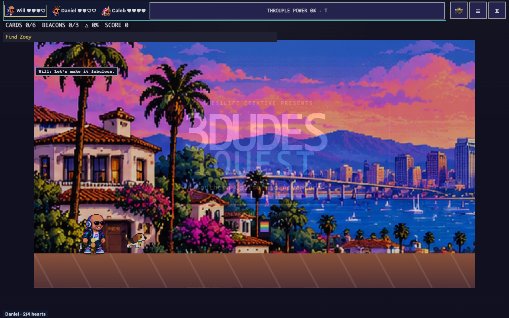
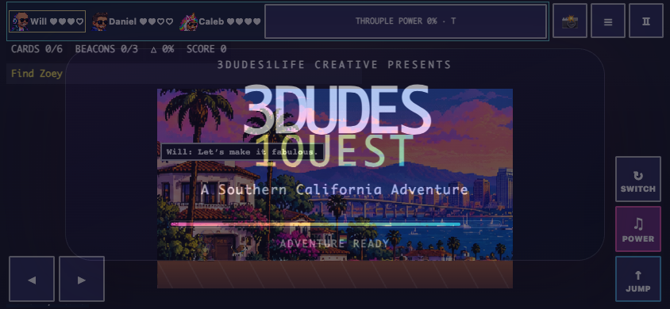
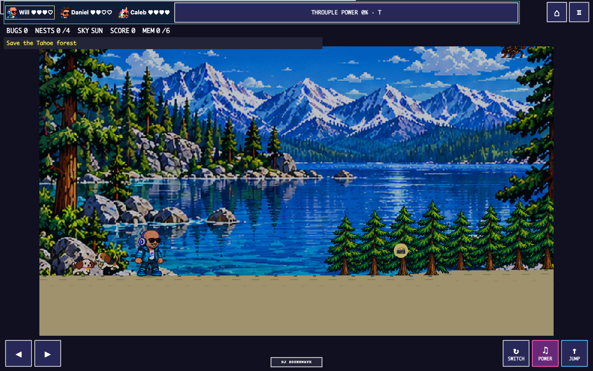
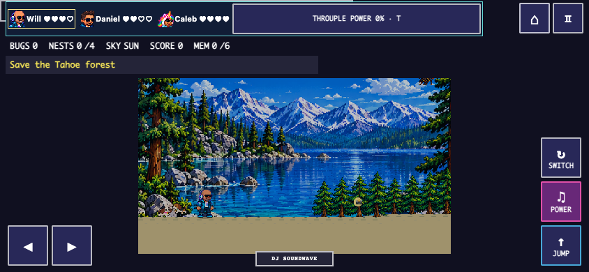
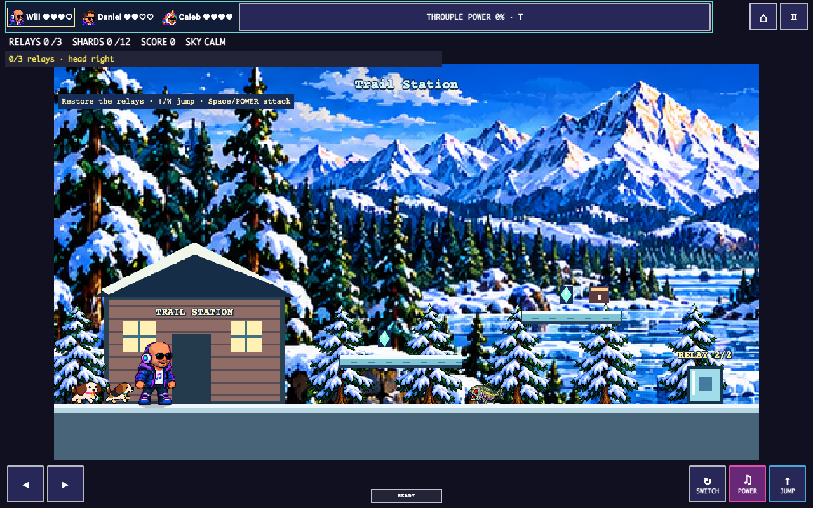
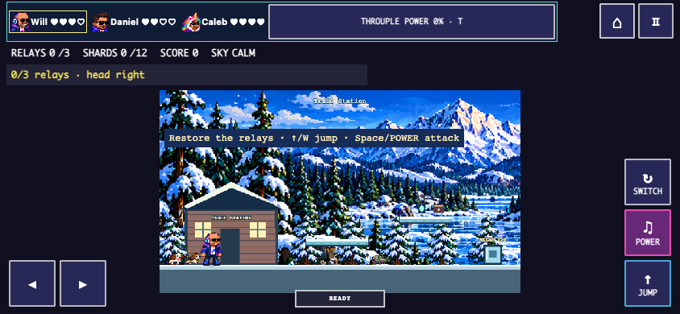
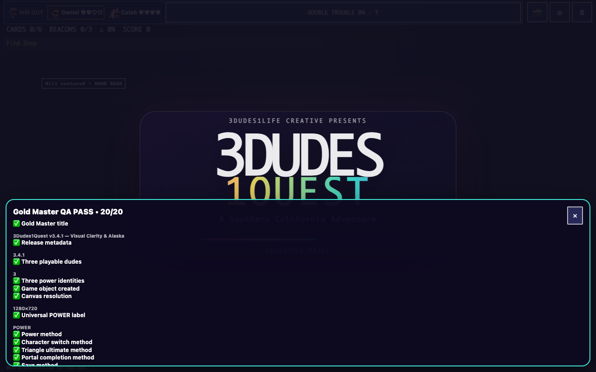
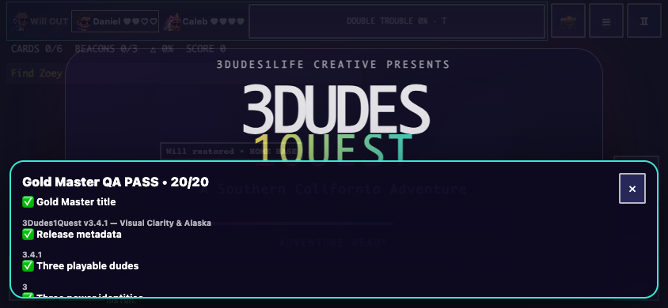
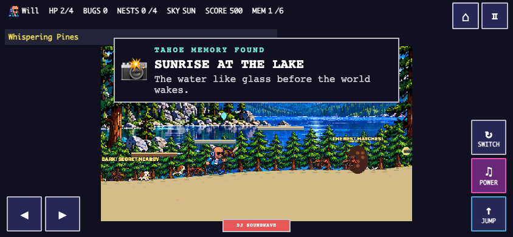
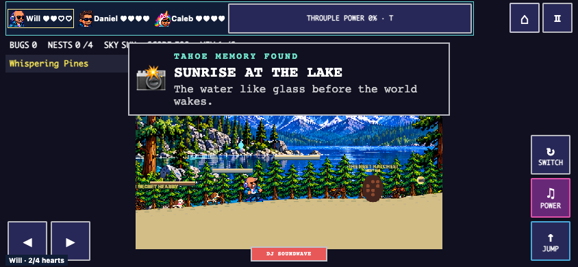

Draft review candidate — no merge or deployment. Start Survival explicitly on the title screen; legacy saves stay separate. T activates a fully charged team power. Knockouts last for a run.
Play SoCal · Play Tahoe · Play Alaska · Architecture / save contract
Local protected testing only: SoCal TEST · Tahoe TEST · Alaska TEST. Damage protection and isolated test saves; this requires loopback hosting and is not production authentication.
Full report / test evidence / limitations · Next Gameplay Polish scope










Automated controlled boss fixtures use actual power projectiles with arena setup and damage protection. Separate normal keyboard routes exercise the complete worlds without those fixture privileges. No physical iPhone/Android verification is claimed.